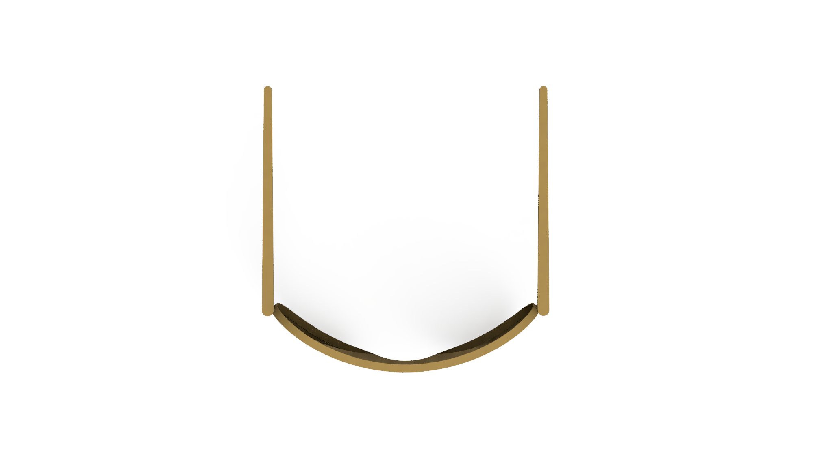
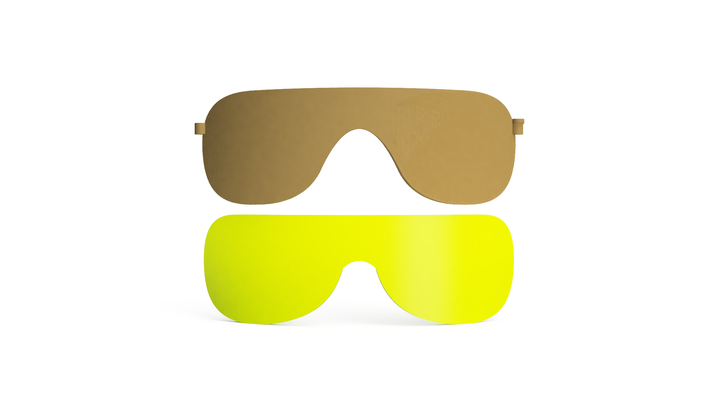
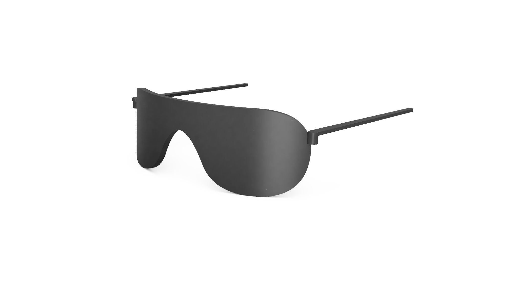
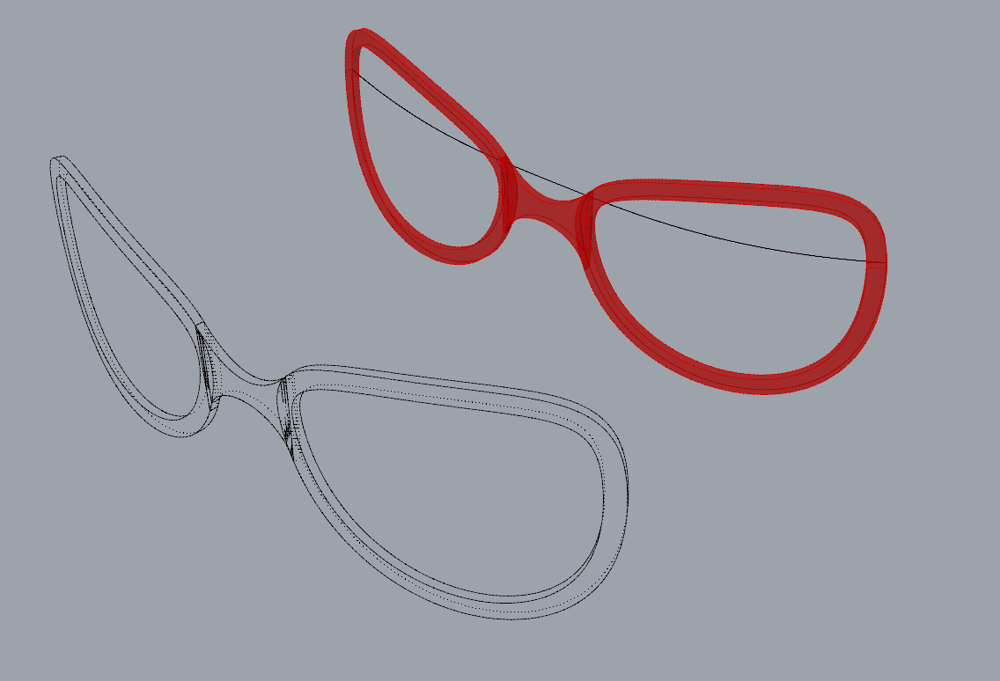

Projecten
Parametrisch fietsbril
Ontwerp voor geavanceerde productiemethodes- en omgevingen




Bescrijving
Een parametrisch fietsbril bestaande uit een montuur en brilpoten die apart te produceren zijn. Er zijn een aantal parameters die aangepast kunnen worden om het comfort te verhogen en om de vorm van de montuur te veranderen. Volgens bepaalde hoofd/gezichtsafmetingen kunnen deze parameters ingesteld worden, deze parameters moeten in de GH code ingegeven worden.